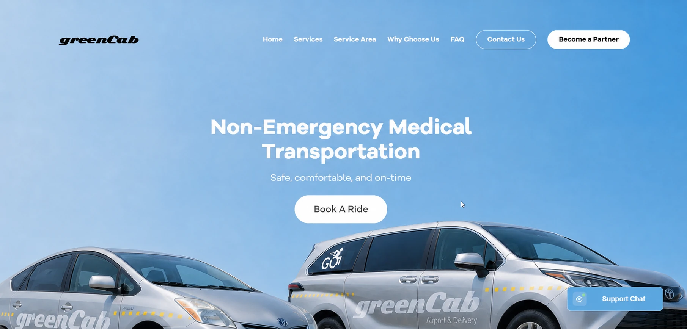
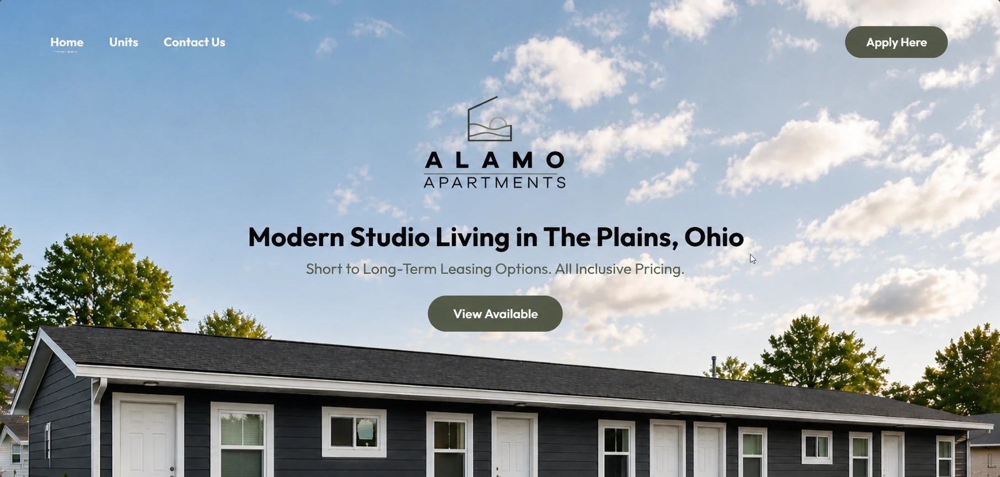

PROVEN WORK
04Published Builds
Commercial websites and client-facing systems that exist beyond this portfolio.
LIVE DRAFT / Independent web studio by Jayzee
Hi, I’m Jayzee Lance Artillagas — a web developer based in the Philippines with 3+ years building production web experiences and recent professional experience as a front-end developer.
I materialize approved designs as responsive production websites using HTML, CSS, and JavaScript, including the interactions and animations that bring each interface to life.
Flat, lifeless handoffs Polished interactions and purposeful motion. Built to work clearly and feel memorable.
Dear visitor & fellow builder,
Across 3+ years of building full-stack web projects, I have worked from interface behavior and responsive layouts through Python, Django, APIs, databases, and deployment. My strongest professional focus is the frontend: turning an approved visual direction into a production experience that feels intentional on every screen.
My most recent professional chapter was with Rinaldi Management, LTD., where I worked remotely as a Front-End Web Developer from January through July 2026. It was a bittersweet chapter to close, but one that strengthened how I collaborate, interpret design intent, and deliver polished client-facing work.
Live Draft is my independent web practice — part production studio, part workshop, and a public record of work that keeps getting better.
— Jayzee Lance Artillagas
Currently Engineering
High-performance Django REST APIs and modular client architectures.
Currently Reading & Exploring
Database query indexing patterns, PostgreSQL query optimization, and modern CSS layout engines.
Availability
Open to front-end roles, full-stack web opportunities, and thoughtful freelance collaborations.
Finished client work stays easy to verify. Experiments remain visible as evidence of curiosity. Every meaningful improvement becomes part of the record.
Commercial websites and client-facing systems that exist beyond this portfolio.
Small interactive systems where motion, code, and visual ideas are tested in public.
The visible history of this website as its content, performance, and interaction design mature.
The next role, collaboration, or independently built product gets a permanent place in the evolving archive.
Start the next entry ↗Publish the proof. Preserve the process. Improve what remains.
Real products and client-facing systems I helped bring into the world. See the live work upfront, then open an entry for my exact role, implementation decisions, and outcomes.
RÉSUMÉ / PDF Want the concise version of my experience, skills, and training?
Download Résumé ↓
LIVE WEBSITE / GREEN CABOpen the production site ↗Create a responsive transportation website where customers can understand service coverage, explore ride options, book transportation, and reach support without friction.
Materialized the supplied designs as a responsive production interface, built the requested interactions and animations, and connected the frontend experience to its Firebase-powered customer flows.
Built the customer-facing experience and connected Firebase-powered booking, inquiries, live chat, editable content, and operational tools for the service team.
Delivered an existing commercial service platform that connects customer acquisition, booking, and day-to-day transportation operations in one responsive system.

LIVE WEBSITE / ALAMO APARTMENTSOpen the production site ↗Present Alamo’s studio properties clearly and turn prospective-tenant interest into qualified leasing inquiries.
Translated the approved property designs into the live responsive website, implementing its layouts, interactive unit presentation, image experiences, transitions, and inquiry-facing interface.
Developed a responsive JavaScript experience for units, locations, amenities, before-and-after photography, availability, and applications, with Firebase supporting editable content and submissions.
Shipped a live commercial leasing site that makes the property offering easier to explore across desktop and mobile while giving the business a direct inquiry path.
Communicate an affordable-housing developer’s projects, progress, partnerships, and community impact in an accessible public website.
Turned the provided visual direction into responsive project, timeline, partnership, FAQ, registration, and referral interfaces, including the intended interaction and animation details.
Structured project timelines, development statistics, partnerships, and FAQs, then connected registration and referral interfaces through Firebase.
Produced a clear information and lead-generation platform for housing projects. The original deployment is now archived.
Build a credible marketing and inquiry experience for non-emergency medical transportation providers and their prospective partners.
Materialized the supplied marketing designs into a responsive website and implemented the requested interactions, animations, service presentation, inquiry, registration, and referral-code experiences.
Created responsive service pages covering fleet options, scheduling capabilities, compliance support, partnerships, inquiries, registration, and referral-code features.
Delivered a focused commercial website that translated a complex operational service into clear customer and partner pathways. The original deployment is now archived.
An isometric 3D perspective landscape inspired by the world-building of Yamauchi No.10. Drag or scroll to travel along the isometric track; click any 3D monolith to launch it into the air!
DRAG THESE AROUND
leave your mark ↘
No arbitrary percentages or vanity bars — just the authentic tools and technologies I use daily to architect reliable systems.
Daily Drivers
Tooling & Ops
Active Growth
Computer Engineering
Observations on web development, backend architectural patterns, and the discipline of clean code.
How leveraging AI as a thought partner enhances system design, rapid test coverage, and code refactoring while preserving developer agency.
Read Note →In an era dominated by heavy utility wrappers, deep mastery of native CSS properties and layout engines remains the ultimate superpower.
Read Note →Practical patterns for query optimization, select_related indexing, and serialization hygiene in production Django deployments.
Read Note →Whether you have an upcoming project, a role to fill, or simply want to exchange ideas, my inbox is open.
✓ Message Received
Thank you for writing. I will reply to your email within 24–48 hours.
Manila, Philippines 🇵🇭
14°35' N, 120°58' E · UTC+08:00